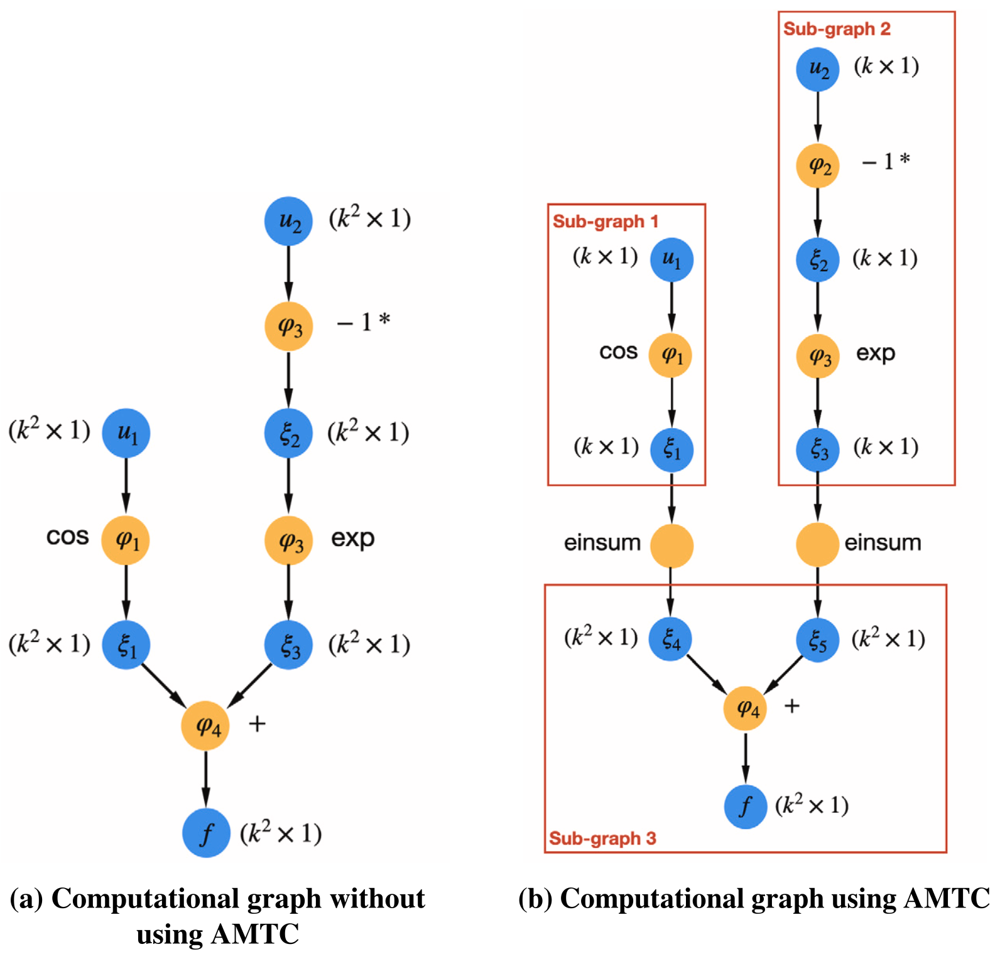
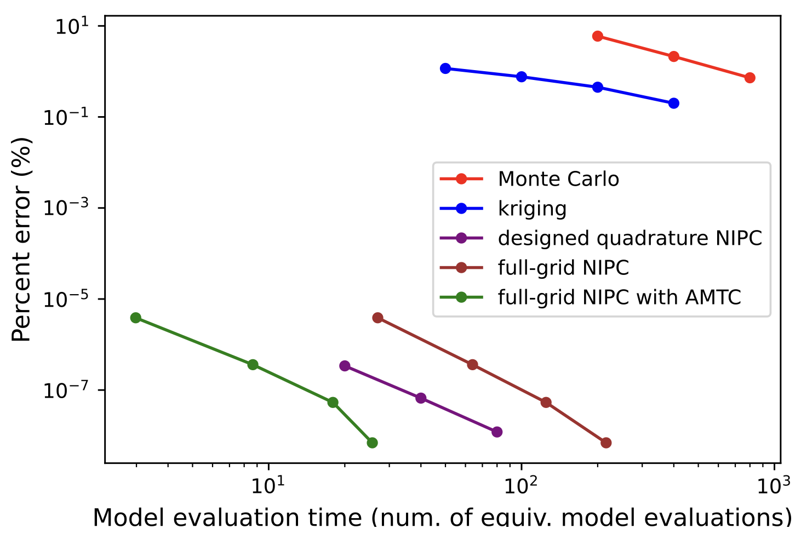
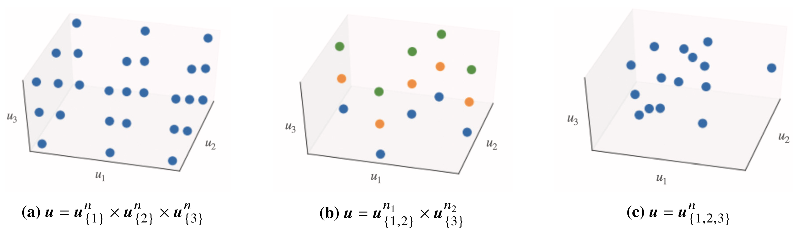
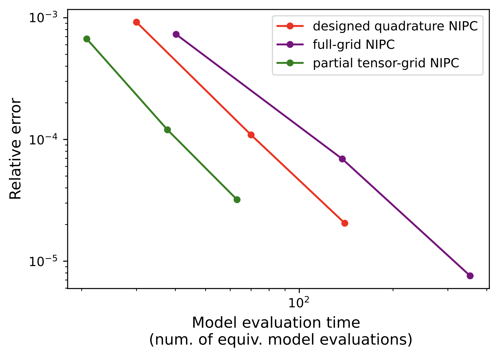
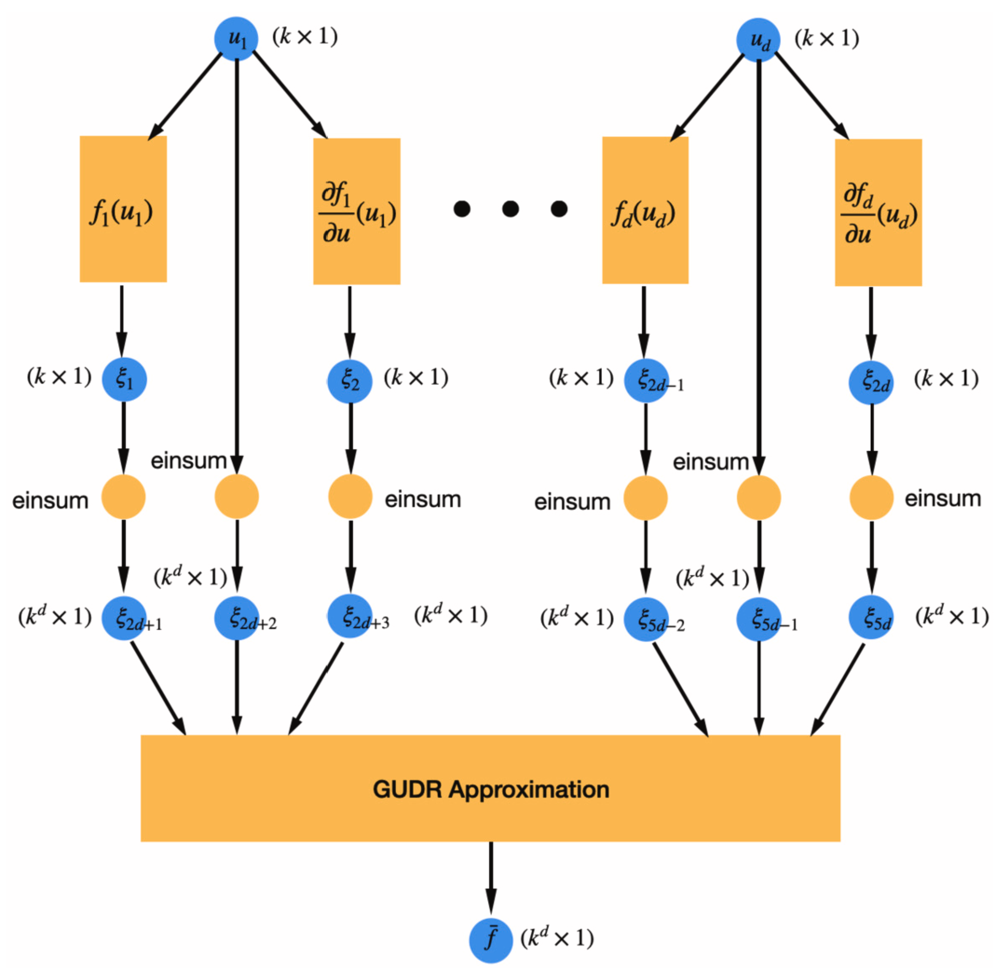
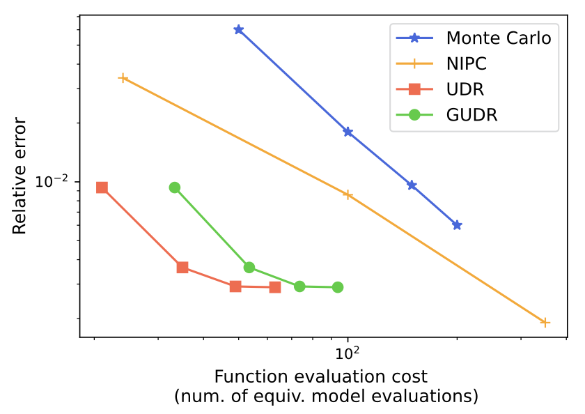
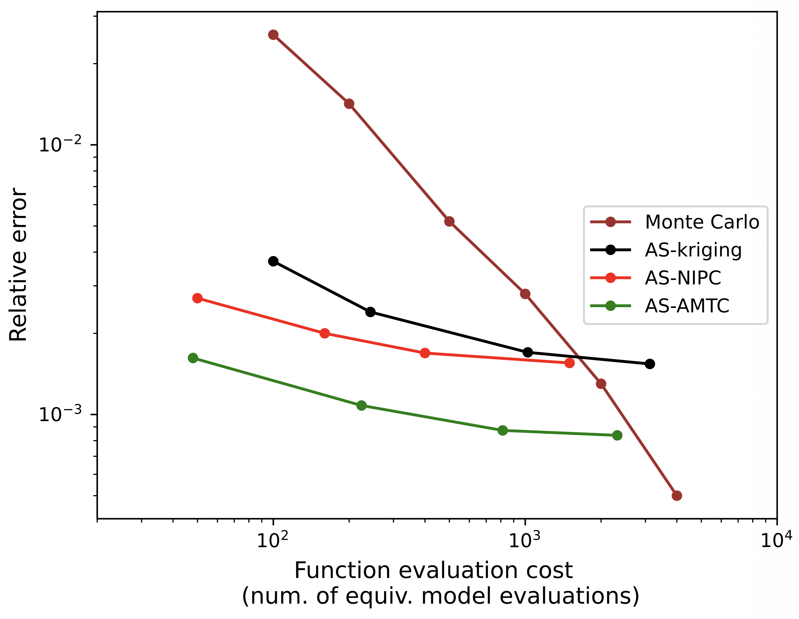

Graph-accelerated MDO under uncertainty
- Context
- Design under uncertainty requires repeated model evaluations to estimate how uncertain inputs affect performance and constraints.
- Gap
- Tensor-product quadrature grows exponentially with input dimension, and conventional evaluations repeat operations that depend on only a subset of inputs.
- Research goal
- Reduce uncertainty-propagation cost by combining computational graph structure with quadrature and sensitivity-based dimension reduction.
Selected studies
ReferencesReusing operations across uncertainty samples
AMTC partitions a model's computational graph by dependence on uncertain inputs and reuses repeated operations across tensor-grid samples. The piston, aircraft, and air-taxi benchmarks retain the same polynomial-chaos quadrature points and estimates while reducing model-evaluation cost through this reuse.
Bingran Wang, Mark Sperry, Victor E. Gandarillas, John T. Hwang. Accelerating Model Evaluations in Uncertainty Propagation on Tensor Grids Using Computational Graph Transformations. Aerospace Science and Technology 145 (2024), p. 108843, 2024.
@article{wang2023accelerating,
author = {Bingran Wang and Mark Sperry and Victor E. Gandarillas and John T. Hwang},
title = {Accelerating Model Evaluations in Uncertainty Propagation on Tensor Grids Using Computational Graph Transformations},
journal = {Aerospace Science and Technology 145 (2024), p. 108843},
year = {2023},
note = {Metadata verification: Crossref unavailable: HTTPError}
}



Matching quadrature structure to model dependencies
Graph dependencies determine which uncertain inputs to group in a partially tensor-structured quadrature rule. Coupled with AMTC, these rules reduce cost relative to full-grid and unstructured designed quadrature in the four- and six-dimensional aircraft tests; the advantage depends on exploitable graph sparsity and the required accuracy.
Bingran Wang, Nicholas C. Orndorff, John T. Hwang. Graph-accelerated non-intrusive polynomial chaos expansion using partially tensor-structured quadrature rules for uncertainty quantification. Aerospace Science and Technology, 2024.
@article{wang2024graph,
author = {Bingran Wang and Nicholas C. Orndorff and John T. Hwang},
title = {Graph-accelerated non-intrusive polynomial chaos expansion using partially tensor-structured quadrature rules for uncertainty quantification},
journal = {Aerospace Science and Technology},
year = {2024},
volume = {155},
pages = {109607},
doi = {10.1016/j.ast.2024.109607},
url = {https://doi.org/10.1016/j.ast.2024.109607},
note = {Metadata verification: Crossref DOI}
}



Improving uncertainty estimates with response gradients
GUDR adds univariate gradient terms to ordinary univariate dimension reduction to approximate interactions between uncertain inputs. The rotor and aircraft tests improve standard-deviation estimates by about an order of magnitude. Linear cost scaling requires efficient automatic differentiation, including second derivatives.
Bingran Wang, Nicholas C. Orndorff, Mark Sperry, John T. Hwang. A gradient-enhanced univariate dimension reduction method for uncertainty propagation. Aerospace Science and Technology, 2024.
@article{wang2024gradient,
author = {Bingran Wang and Nicholas C. Orndorff and Mark Sperry and John T. Hwang},
title = {A gradient-enhanced univariate dimension reduction method for uncertainty propagation},
journal = {Aerospace Science and Technology},
year = {2024},
volume = {155},
pages = {109602},
doi = {10.1016/j.ast.2024.109602},
url = {https://doi.org/10.1016/j.ast.2024.109602},
note = {Metadata verification: Crossref DOI}
}



Extending graph acceleration to many uncertain inputs
AS-AMTC constructs polynomial-chaos approximations in active variables and arranges quadrature points so graph operations can still be reused. An air-taxi uncertainty problem with 81 inputs demonstrates improved accuracy over the compared active-subspace estimators, while retaining the approximation error introduced by dimension reduction.
Bingran Wang, Nicholas C. Orndorff, Mark Sperry, John T. Hwang. Extension of graph-accelerated non-intrusive polynomial chaos to high-dimensional uncertainty quantification through the active subspace method. Aerospace Science and Technology, 2025.
@article{wang2025extension,
author = {Bingran Wang and Nicholas C. Orndorff and Mark Sperry and John T. Hwang},
title = {Extension of graph-accelerated non-intrusive polynomial chaos to high-dimensional uncertainty quantification through the active subspace method},
journal = {Aerospace Science and Technology},
year = {2025},
volume = {160},
pages = {110074},
doi = {10.1016/j.ast.2025.110074},
url = {https://doi.org/10.1016/j.ast.2025.110074},
note = {Metadata verification: Crossref DOI}
}

References
- Bingran Wang, Mark Sperry, Victor E. Gandarillas, John T. Hwang. Accelerating Model Evaluations in Uncertainty Propagation on Tensor Grids Using Computational Graph Transformations. Aerospace Science and Technology 145 (2024), p. 108843, 2024.PDF
@article{wang2023accelerating, author = {Bingran Wang and Mark Sperry and Victor E. Gandarillas and John T. Hwang}, title = {Accelerating Model Evaluations in Uncertainty Propagation on Tensor Grids Using Computational Graph Transformations}, journal = {Aerospace Science and Technology 145 (2024), p. 108843}, year = {2023}, note = {Metadata verification: Crossref unavailable: HTTPError} } - Bingran Wang, Nicholas C. Orndorff, John T. Hwang. Graph-accelerated non-intrusive polynomial chaos expansion using partially tensor-structured quadrature rules for uncertainty quantification. Aerospace Science and Technology, 2024.DOIPDF
@article{wang2024graph, author = {Bingran Wang and Nicholas C. Orndorff and John T. Hwang}, title = {Graph-accelerated non-intrusive polynomial chaos expansion using partially tensor-structured quadrature rules for uncertainty quantification}, journal = {Aerospace Science and Technology}, year = {2024}, volume = {155}, pages = {109607}, doi = {10.1016/j.ast.2024.109607}, url = {https://doi.org/10.1016/j.ast.2024.109607}, note = {Metadata verification: Crossref DOI} } - Bingran Wang, Nicholas C. Orndorff, Mark Sperry, John T. Hwang. A gradient-enhanced univariate dimension reduction method for uncertainty propagation. Aerospace Science and Technology, 2024.DOIPDF
@article{wang2024gradient, author = {Bingran Wang and Nicholas C. Orndorff and Mark Sperry and John T. Hwang}, title = {A gradient-enhanced univariate dimension reduction method for uncertainty propagation}, journal = {Aerospace Science and Technology}, year = {2024}, volume = {155}, pages = {109602}, doi = {10.1016/j.ast.2024.109602}, url = {https://doi.org/10.1016/j.ast.2024.109602}, note = {Metadata verification: Crossref DOI} } - Bingran Wang, Nicholas C. Orndorff, Mark Sperry, John T. Hwang. Extension of graph-accelerated non-intrusive polynomial chaos to high-dimensional uncertainty quantification through the active subspace method. Aerospace Science and Technology, 2025.DOIPDF
@article{wang2025extension, author = {Bingran Wang and Nicholas C. Orndorff and Mark Sperry and John T. Hwang}, title = {Extension of graph-accelerated non-intrusive polynomial chaos to high-dimensional uncertainty quantification through the active subspace method}, journal = {Aerospace Science and Technology}, year = {2025}, volume = {160}, pages = {110074}, doi = {10.1016/j.ast.2025.110074}, url = {https://doi.org/10.1016/j.ast.2025.110074}, note = {Metadata verification: Crossref DOI} } - Tae H. Ha, Keunseok Lee, John T. Hwang. Large-scale multidisciplinary optimization under uncertainty for electric vertical takeoff and landing aircraft. AIAA Scitech 2020 Forum, 2020.DOIPDF
@inproceedings{ha2020large, author = {Tae H. Ha and Keunseok Lee and John T. Hwang}, title = {Large-scale multidisciplinary optimization under uncertainty for electric vertical takeoff and landing aircraft}, booktitle = {AIAA Scitech 2020 Forum}, year = {2020}, doi = {10.2514/6.2020-0904}, url = {https://doi.org/10.2514/6.2020-0904}, note = {Metadata verification: Crossref title} } - Luca Scotzniovsky, John T. Hwang. A Fast, Memory-Efficient Panel Method for Large-Scale Multidisciplinary Design Optimization Under Uncertainty Using Graph-Based Modeling. AIAA AVIATION 2025 Forum, 2025.PDF
@inproceedings{scotzniovsky2025fast, author = {Luca Scotzniovsky and John T. Hwang}, title = {A Fast, Memory-Efficient Panel Method for Large-Scale Multidisciplinary Design Optimization Under Uncertainty Using Graph-Based Modeling}, booktitle = {AIAA AVIATION 2025 Forum}, year = {2025} } - Bingran Wang, Nicholas C. Orndorff, Anugrah J. Joshy, John T. Hwang. Graph-accelerated large-scale multidisciplinary design optimization under uncertainty of a laser-beam-powered aircraft. AIAA SCITECH 2024 Forum, 2024.DOIPDF
@inproceedings{wang2024grapha, author = {Bingran Wang and Nicholas C. Orndorff and Anugrah J. Joshy and John T. Hwang}, title = {Graph-accelerated large-scale multidisciplinary design optimization under uncertainty of a laser-beam-powered aircraft}, booktitle = {AIAA SCITECH 2024 Forum}, year = {2024}, doi = {10.2514/6.2024-0169}, url = {https://doi.org/10.2514/6.2024-0169}, note = {Metadata verification: Crossref DOI} } - Bingran Wang, Marius L. Ruh, Aoran Tian, Luca Scotzniovsky, John T. Hwang. Large-scale MDO under uncertainty of an eVTOL aircraft using dimension reduction via global sensitivity analysis. AIAA AVIATION FORUM AND ASCEND 2025, 2025.DOIPDF
@inproceedings{wang2025large, author = {Bingran Wang and Marius L. Ruh and Aoran Tian and Luca Scotzniovsky and John T. Hwang}, title = {Large-scale MDO under uncertainty of an eVTOL aircraft using dimension reduction via global sensitivity analysis}, booktitle = {AIAA AVIATION FORUM AND ASCEND 2025}, year = {2025}, doi = {10.2514/6.2025-3344}, url = {https://doi.org/10.2514/6.2025-3344}, note = {Metadata verification: Crossref title} }
Research connections